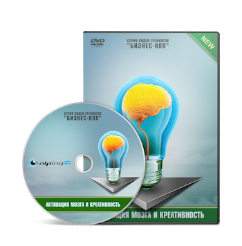

Активизация мозга и креативность
видео-тренинг из серии "Бизнес-НЛП"

Почему люди ошибаются, даже когда все знают?
Случалось ли Вам совершать серьезную ошибку, а потом ловить себя на мысли:
"Я же знал, как нужно было сделать!"
И тем досаднее ошибка, чем серьезнее потеря и очевиднее "как надо было поступить".
Вы можете избежать 92% таких ошибок в будущем (8% - это, увы, неизбежная статистика).
Причины всех ошибок лежат в одной из двух плоскостей:
Первая плоскость - это "залипание" в одну из крайностей. Либо в в эмоции, что лишает здравой оценки ситуации. Либо в чрезмерную рационализацию, что лишает чувствования и предвидения "человеческих факторов".
Вторая же плоскость - это перекос мышления либо в сторону слишком логического подхода, либо в сторону интуитивного.
Логический подход (левополушарное мышление) не имеет целостного восприятия картины (за что отвечает правое полушарие). И, как следствие, оно не видит все аспекты, тренды и вероятности.
Интуитивный подход (правополушарное мышление) не имеет достаточной сфокусированности и возможности видеть ключевые различия. Некоторые "интуиты" порой настолько уходят "в поток", что пройдя пол пути вдруг обнаруживают, что уже давно идут вообще не туда ;)
Разум и ум - это разные вещи.
Ум может ошибаться, потому что он анализирует и предполагает.
Разум же — видит. Потому что соединяет выводы с ощущениями, а логику с интуицией.
Универсальный способ получить ясный разум на 1,5 часа за 10 минут
Можно, конечно, годами прокачивать в себе противоположное мышление, заставляя себя заниматься математикой (если вы "интуит") или творчеством (если вы "логик"). Но если Вы уже достаточно разумны, то понимаете, что "раскачивание маятника" - это не лучшее решение. То, что действительно нужно - это баланс.
Сбалансировать работу полушарий мозга можно всего за 10 минут, и получить ясный и быстрый ум на 1,5 часа*.
(* 1,5 часа - естественный цикл работы мозга, в конце которого он меняет свой ритм. Но состояние баланса можно снова вернуть за 3-5 минут.)
Причем, для этого не нужно есть специальные таблетки или медитировать под высоковольтными проводами ;)
Все намного проще, и достигается специальными физическими упражнениями, которые балансируют нашу нейрологию за счет определенной координации движений.
Упражнения настолько просты, что выглядят как забавные игры. И при этом они настолько же увлекательные и веселые.
Что Вы сможете, когда Ваш мозг будет работать в 2,5 раза эффективнее?
Когда мы только узнали об этих упражнениях (на семинаре Джона Гриндера по Новому Коду НЛП в 2004 году), нам захотелось устроить им "массовую проверку" ;) В течение года с группой добровольцев мы еженедельно практивали эти упражнения и наблюдали за изменениями. Однако, правильные решения в бизнесе, налаживание личных отношений, легкая переносимость стресса и оптимизм по жизни - показались нам не достаточно измеримыми результатами. (Внутренний исследователь, порой, делает из тебя редкостного зануду ;))) И тогда мы решили подключить к голове приборы и замерить изменения в мозге.
Как выяснилось, сразу после выполнения упражнений работа полушарий действительно полностью (!) балансируется (по УПП мозга). А приятной неожиданностью стало еще и то, что альфа- и бетта- ритмы мозга повышаются в 2,5 раза! Это означает, что кора головного мозга (неокортекс), отвечающая за творческое мышление, креативность и быстрый поиск нестандартных решений, начинает работать в 2,5 раза лучше! Дельта- и Тетта- ритмы, отвечающие за эмоциональную систему, наоборот - снижаются до комфортного уровня.
Желающим я могу выслать подробный отчет об исследовании по-емейл. А если Вы заумстованиям предпочитаете наглядность и простой язык - посмотрите эти видео. В них я рассказываю, как это работает.
Как увеличить эффективность работы мозга в 2,5 раза? | Состояние HPS (состояние высокой продуктивности)
Сколько стоит разум?
Мозги не купишь. Но можно получить технологию, которая за 10 минут даст Вам принципиально новый уровень мышления. Этому подробно обучает двухчасовой DVD-тренинг "Активизация мозга и креативность", со всеми пояснениями и деталями:
В программе тренинга:
Это должен знать каждый:
- Как вообще устроено наше мышление и восприятие?
- Как избежать 92% ошибок, которые мы совершаем не из-за недостатка информации, а из-за неверного мышления?
- Рамки мышления - как ими управлять, и как выйти за их пределы?
- Как выйти на принципиально новый уровень мышления?
Разбудите свой мозг! (Новый Код НЛП)
- Как избавиться от эмоционального напряжения и легко переносить стрессы?
- Как "включить" в себе состояние "потока" и креативность за 10 минут?
- Как отключить внутренний диалог?
- Как войти в состояние тишины ума и начать просто видеть решения, вместо анализа и предположений?
- Увеличиваем качество работы мозга в 2,5 раза с помощью техник Нового Кода НЛП.
- Как самому создавать такие техники и упражнения (принципы работы и "исходный код" упражнений).
Еще практичнее и глубже!
- Как сделать достижение цели легким и неизбежным с помощью состояния?
- Как выйти на уровень событийного потока?
- Миссия человека. Чем на самом деле является то, что мы считаем своей миссией и как мы можем увидеть действительно свою миссию?
В результате прохождения этого тренинга
(при выполнении упражнений)
- Вы научитесь активизировать работу своего мозга за 10 минут (за 3-5 минут после 6 выполнений упражнения).
- Вы сможете мгновенно (используя память тела) входить в состояние "потока" и работать с максимальной эффективность.
- Креативность и поиск новых, нестандартных решений будеть для Вас простой стандартной задачей.
- Вы будете легко находить выходы из любых "тупиковых" ситуаций.
- Вы будете уметь быстро снимать стресс и негативные эмоции.
- При регулярных занятиях (1-2 раза в неделю по 15 минут) уже через месяц Вам уже не нужно будет делать упражнения, для того чтобы мыслить быстро и ясно, всегда быть в потоке оптимизма и просто отлично себя чувстовать.
- В качестве побочного эффекта: Вы найдете для себя решения на те вопросы, которые давным давно не можете решить или не решаетесь это сделать.
А также ПОДАРКИ для Вас!!!
Чтобы Ваши результаты были еще выше, вместе с этим тренингом мы дарим Вам еще несколько!
Любовь и создание гармоничных отношений
Отножения МЖ и бизнес
- Как связаны эти вещи, и почему одно влияет на другое?
- Три ключевых принципа гармоничных отношений.
Внутренний мужчина и внутренняя женщина
- Как развивать в себе мужественность и женственность? Откуда "ноги" растут?
- Женская и мужская энергия в каждом из нас - как с ней правильно обращаться?
- Работа с энергиями Инь и Ян.
- Тренировочные задания: Учимся замечать в себе проявления иньской и янской энергий и развивать их.
Задание для продвинутых: Трансформируем негативные проявления иньской и янской энергии.
Секс и деньги
- Как связаны секс и деньги и как развить в себе эти энергии. Архетип Шлюхи.
- Техника развития энергий, привлекающих секс и деньги.
- Техника "ПЖС".
- Фреймы, рамки и ограничения, мешающие нам жить полной жизнью. Как с ними бороться?
- Как развивать в себе мастерство?
- Тренировочные задания: Прокачиваем энергии секса и денег.
Как определить своего партнера?
(Не слушайте этот каст, если Вы не уверены в прочности Ваших текущих отношений - после него они могут развалиться.)
- Как устроены системы и почему изменения в отношениях создают самые большие изменения в жизни?
- Что такое "любовь к себе" и как ее обрести?
- Что самое главное в отношениях?
- Для чего нам даны половые отношения, какие ресурсы в них есть и как мы можем их использовать?
- Тренировочные задания: Развиваем любовь к себе.
Поиск своего партнера
Философия и конкретные практические рекомендации по поиску своего партнера.
Как управлять общением с помощью эмоциональных качелей?
- Тренерский секрет про обратную связь.
- Иллюзия, в которой мы живем и как выйти за рамки?
- Как учиться в несколько раз эффективнее?
- Как управлять общением с помощью эмоциональных качелей (техника, обычная и продвинутая версии).
- Как найти общий язык с детьми?
- Манипуляция - где истина?
Автор и ведущий тренингов

Егор Булыгин - M.A. NLP, сертифицированный коуч, сертифицированный тренер НЛП (Международный Эриксоновский Университет, Канада)
Год рождения - 1977, г. Москва. Веду тренинги и частную практику с 2003 года, в НЛП с 2000 года. Для себя занимаюсь Чжун Юань Цигуном с 2003 года (Сюй Минтан), медитацией с 1992 года (трансцендентальная медитация и др. практики). Являюсь автором многих учебных программ и книги "НЛП как оно есть. Практика успеха."
Тренинг по Новому Коду НЛП был моим самым первым тренингом, и исторически так сложилось, что меня стали называть "главным специалистом по Новому Коду НЛП". За первые 4 года тренерской практики я довел его до абсолютного совершенства. А за следующие 4 года упростил до необходимого минимума и выкинул из него все лишнее. Теперь это не просто один из самых эффективных инструментов, но еще и один из самых удобных и быстрых.
Стоимость видео-тренинга
4 700 руб. - электронная версия, доставка через интернет.
Гарантии
Если Вам не понравится приобретенный тренинг по любой причине, мы вернем Вам деньги по первому Вашему требованию. Сразу и без лишних разговоров.При этом, все материалы Вы можете оставить у себя.
Для доставки тренинга нам необходимо знать Ваши контактные данные. Вся информация о Вас будет защищена и недоступна для третьих лиц.
| Видеофайл + подарки! | 4 700 руб. |  |